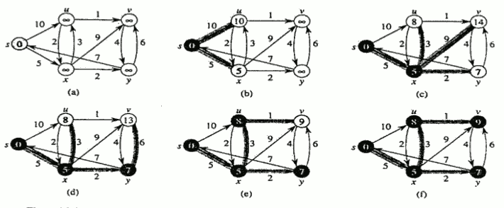
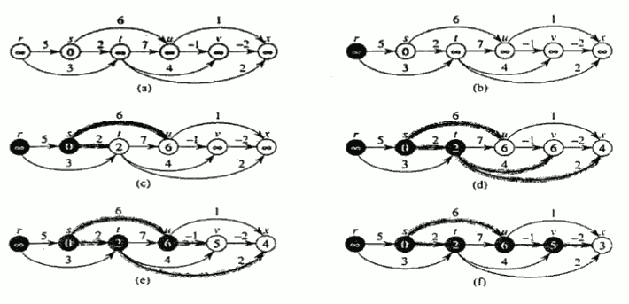

Torna alla pagina di Algoritmi e strutture dati
Questa pagina è stata aggiornata GRAZIE agli appunti che AVETE INVIATO nel periodo di chiusura della sezione UniCrema!! È SERVITA A QUALCOSA, NO?! ;)
:: Algoritmi e strutture dati - Cammini minimi ::
Alberi di connessione minima
Si vuole trovare un sottoinsieme aciclico che connetta tutti i vertici di un grafo e tale che venga minimizzato il peso totale. Questo sottoinsieme aciclico deve formare un albero di copertura. Il problema di costruire un albero di copertura si può risolvere con due algoritmi: Kruskal e Prim. Questi due algoritmi vengono eseguiti nel tempo O(E lg V) se usano heap binari mentre quello di Prim se usa heap di Fibonacci viene eseguito nel tempo O(E + V lg V).
I due algoritmi illustrano inoltre un'euristica di ottimizzazione: la strategia greedy. Questa strategia prescrive di fare la scelta più conveniente quando bisogna scegliere tra varie alternative durante l'esecuzione di un algoritmo.
Sia dato un grafo non orientato G = (V, E) con una funzione peso w: E ---> R, si vuole costruire un albero di connessione minima.
La strategia greedy utilizza un algoritmo generico che fa crescere l'albero di copertura minima di un arco alla volta.
L'algoritmo considera un sottoinsieme A di un qualche albero di copertura minimo e ad ogni passo viene determinato un arco che può essere aggiunto ad A senza violare la proprietà di A (deve essere un sottoinsieme di un qualche albero di copertura minimo). Questo arco è detto arco sicuro per A perché può essere aggiunto ad appunto senza violare la sua proprietà.
Si dice TAGLIO(S, V-S) di un grafo non orientato, una partizione di V.
Un arco attraversa il taglio se uno dei suoi estremi è in S e l'altro in V-S.
Un taglio rispetta un insieme A di archi se nessun arco di A attraversa il taglio.
Si dice ARCO LEGGERO: l'arco che attraversa il taglio ed il suo peso è minimo tra i pesi degli archi che attraversano quel taglio.
KRUSKAL (caso speciale dell'algoritmo generico)
L'insieme A è una foresta e l'arco sicuro che viene aggiunto ad A è sempre un arco di peso minimo che connette due componenti distinte.
Vengono esaminati gli archi ed ordinati in ordine di peso dal più piccolo al più grande. Successivamente per ogni arco si controlla se le estremità appartengono allo stesso albero; se è così l'arco viene scartato perchè non può essere aggiunto alla foresta senza creare cicli. Se invece i due vertici appartengo a due alberi diversi, viene aggiunto l'arco e i due vertici vengono fusi in un unico insieme.
Tempo O(E lg E).
PRIM (caso speciale dell'algoritmo generico)
A forma un singolo albero e l'arco sicuro aggiunto ad A è sempre quello peso minimo che connette l'albero a un vertice non appartenente all'albero.
Proprietà: gli archi di A formano un singolo albero.
L'albero parte da un arbitrario vertice radice e cresce fino a quando l'albero non copre tutti i vertici in v. Ad ogni passo, viene aggiunto un arco leggero.
Durante l'esecuzione dell'algoritmo tutti i vertici che non sono nell'albero risiedono in una coda con priorità Q basata su di un campo chiave key.
- Si inizializza la coda con tutti i vertici ponendo al valore infinito la key di ogni vertice, tranne nella radice dove viene posta a zero.
- Il predecessore della radice viene posto a NIL.
- Vengono poi aggiornati i campi chiave e predecessore di ogni vertice v adiacente ad u ma non appartenente all'albero.
Il colore dei vertici è inizialmente bianco e diventa nero quando il vertice viene aggiunto all'albero.
Complessità: O( V lg V + E lg E).
Cammini minimi da sorgente unica
Dato un grafo G = (V, E) orientato e pesato, il peso di un cammino è la somma dei pesi associati agli archi che compongono il cammino.
Il peso minimo da u a v è uguale al minimo peso tra i cammini uv se esiste un cammino da u a v altrimenti è uguale a infinito.
Varianti del calcolo dei cammini minimi (casi):
- cammini minimi da sorgente unica a tutti gli altri vertici;
- cammini minimi da ogni vertice ad un'unica destinazione;
- cammini minimi da un'unica sorgente ad un'unica destinazione;
- cammini minimi da ogni vertice ad ogni altro vertice.
Con i cammini minimi da sorgente unica si possono avere archi con pesi negativi.
Se il grafo:
- non contiene cicli di peso negativo raggiungibili dalla sorgente s, allora per ogni vertice il peso del cammino minimo rimane ben definito anche se ha valore negativo;
- contiene cicli di peso negativo raggiungibili da s, allora il peso dei cammini minimi non rimangono più ben definiti. Nessun cammino da s a un vertice nel ciclo può essere minimo, dato che un cammino di peso minore può essere sempre trovato seguendo il cammino minimo proposto e quindi percorrendo il ciclo negativo. Il peso del cammino negativo è – infinito.
Se un vertice è raggiungibile da un cammino – infinito allora anche quel vertice avrà valore di – infinito.
Spesso è utile calcolare oltre ai cammini minimi anche i vertici che li compongono.
Dato un grafo si mantiene per ogni vertice v un predecessore che può essere un altro nodo o NIL.
Alcuni algoritmi gestiscono i predecessori in modo tale da ripercorrere all'indietro un cammino da un nodo all'altro.
Ricordiamo inoltre, che un cammino minimo, non può contenere alcun tipo di cicli.
Se un cammino è minimo anche i suoi sottocammini allora sono cammini minimi.
TECNICA DEL RILASSAMENTO
La tecnica del rilassamento è utilizzata dagli algoritmi che studieremo a breve.
Questa tecnica consiste nel associare ad ogni vertice un attributo d[v] chiamato stima di cammino minimo che costituisce un limite superiore al peso di cammino minimo da s a v; e a diminuire ripetutamente questo limite superiore al reale peso di cammino minimo di ogni vertice, finché il limite superiore non diventa uguale al peso di cammino minimo stesso.
Gli attributi d[v] e il predecessore vengono inizializzati sempre rispettivamente a infinito e NIL.
d[v] = 0 per v = s
Si applica su un arco e verifica se passando per u è possibile diminuire la distanza per v.
s v s v
5 -----2-------> 9 5 -----2------->6
| |
| relax | relax
| |
5 -----2-------> 7 5 -----2------->6
Nell'algoritmo di Dijkstra e nell'algoritmo dei cammini minimi per grafi orientati aciclici, ogni arco viene rilassato una sola volta; mentre con Bellman – Ford viene rilassato più volte.
DIJKSTRA
Questo algoritmo risolve il problema di cammini minimi con sorgente singola su un grafo orientato e pesato se tutti i pesi degli archi non sono negativi.
Seleziona ripetutamente il vertice u che appartiene a V-s con la minima stima di cammino minimo, inserisce u in S e rilassa tutti gli archi uscenti da u.
L'algoritmo mantiene una coda a priorità Q contenente tutti i vertici di V-S, usando come chiave i rispettivi valori d.
Si assume, inoltre, che il grafo sia rappresentato con liste di adiacenza.
Utilizza la strategia greedy vista in precedenza.
Complessità: O(n^2).

Videolezioni su YouTube con esempi pratici:
BELLMAN – FORD
Questo algoritmo risolve il problema di cammini minimi con sorgente singola su un grafo orientato e pesato se tutti i pesi degli archi possono essere negativi.
Restituisce un valore booleano che indica se esiste o no un ciclo di peso negativo raggiungibile dalla sorgente.
Se esiste l'algoritmo indica che non esiste soluzione altrimenti se non esiste produce i cammini minimi e i loro pesi.
Questo algoritmo usa anch'esso, come Dijkstra, la tecnica del rilassamento.
Esegue V-1 passate ma esegue molti rilassamenti inutili.
Complessità: O(VE).
GRAFI ORIENTATI ACICLICI
I cammini minimi da sorgente unica possono essere calcolati nel tempo O(V+E) rilassando gli archi di un grafo orientato aciclico (DAG) pesato secondo un ordinamento topologico dei suoi vertici.
Nei dag non possono esistere cicli di peso negativo anche se esistono archi negativi.
Funzionamento dell'algoritmo:
ordina il dag topologicamente: se c'è un cammino da u a v allora u precede v.
Esegue una sola passata sui vertici seguendo l'ordinamento topologico: quando un vertice viene elaborato, tutti gli archi uscenti da esso vengono rilassati.

Cammini minimi tra tutte le coppie di vertici in un grafo
Dato un grafo orientato e pesato che associa ad ogni arco un peso a valore nei reali, si vuole trovare per ogni coppia di vertici un cammino minimo restituendo come output una tabella.
Il problema dei cammini minimi tra tutte le coppie si risolve con un algoritmo dei cammini minimi da sorgente unica. In particolare se i pesi degli archi non sono negativi si utilizza Dijkstra mentre se i pesi sono negativi si usa Bellman – Ford una volta per ogni vertice.
Il grafo viene rappresentato con una matrice di adiacenza dove:
- se i = j allora w(i,j) = 0;
- se i =! j e (i,j) appartengono a E allora w(i,j) = peso dell'arco orientato (i,j);
- se i =! j e (i,j) non appartengono a E allora w(i,j) = infinito.
Sono ammessi archi di peso negativo.
Oltre alla matrice di adiacenza si deve calcolare anche la matrice dei predecessori e da essa, per ogni vertice, si definisce il sottografo dei predecessori.
Algoritmo Floyd – Warshall
Con questo algoritmo si possono avere archi negativi ma si assume di non avere cicli di peso negativo. Esso considera i vertici intermedi di un cammino minimo ovvero: <V2,V3,...,Vv-1>.
Dato un insieme di vertici V di G si consideri un sottoinsieme di vertici da 1 a k per un qualche k.
Per ogni coppia di vertici ij, si considerino tutti i cammini da i a j cui i vertici intermedi stanno nel sottoinsieme e sia p un cammino di peso minimo tra di essi.
Se k:
- non è un vertice intermedio di p, allora tutti i vertici intermedi sul cammino p sono in (1, 2, ..., k-1);
- è un vertice intermedio su p cammino minimo, allora spezzo k in p1 (cammino minimo da i a k) con vertici intermedi in (1, ..., k-1) e p2 (cammino minimo da k a j) con vertici intermedi in (1, ..., k-1).
Complessità: teta(n^3).
SOLUZIONE RICORSIVA
Dato il peso di un cammino minimo da i a j con vertici intermedi in (1, ..., k), quando:
- k = 0: si ha un cammino che non ha vertici intermedi e quindi ha, al massimo, un arco.
COSTRUIRE UN CAMMINO MINIMO
Ci sono diversi metodi:
- calcolo la matrice D dei pesi di cammino minimo e ricavo la matrice dei predecessori da D;
- si costruisce la matrice dei predecessori “in linea” mentre l'algoritmo Floyd Marshall calcola D.
Se:
- k = 0: (cammino minimo senza vertici intermedi)
- se i = j o il peso del cammino minimo ij = infinito, allora il predecessore ij = NIL;
- se i =! j e il peso del cammino minimo ij < infinito, allora il predecessore ij = i.
- k >= 1: se prendo il cammino i---> k----> j allora il predecessore di j = predecessore del cammino minimo da k con vertici intermedi (1,...., k-1). Altrimenti scelgo lo stesso predecessore j scelto in un cammino minimo dai i a v con vertici (1, ..., k-1).
CHIUSURA TRANSITIVA DI UN GRAFO
Consiste nel generare un altro grafo con gli stessi nodi e con archi da i a j se nel grafo precedente esiste un percorso da i a j.
Due soluzioni:
- Assegno un peso pari a 1 ad ogni arco in E ed applico Floyd-Warshall e se esiste un cammino da i a j allora dij < n; altrimenti dj = ∞ ⇒ complessità Θ(n3)
- Sostituisco le operazioni di min e + dell’algoritmo di Floyd-Warshall con le operazioni logiche ∨ (or) e ∧ (and) Per i,j,k=1,...,n, definiamo tij (k) pari a 1 se esiste in G un cammino da i a j con tutti i vertici intermedi in {1,...,k}; 0 altrimenti.
Torna alla pagina di Algoritmi e strutture dati